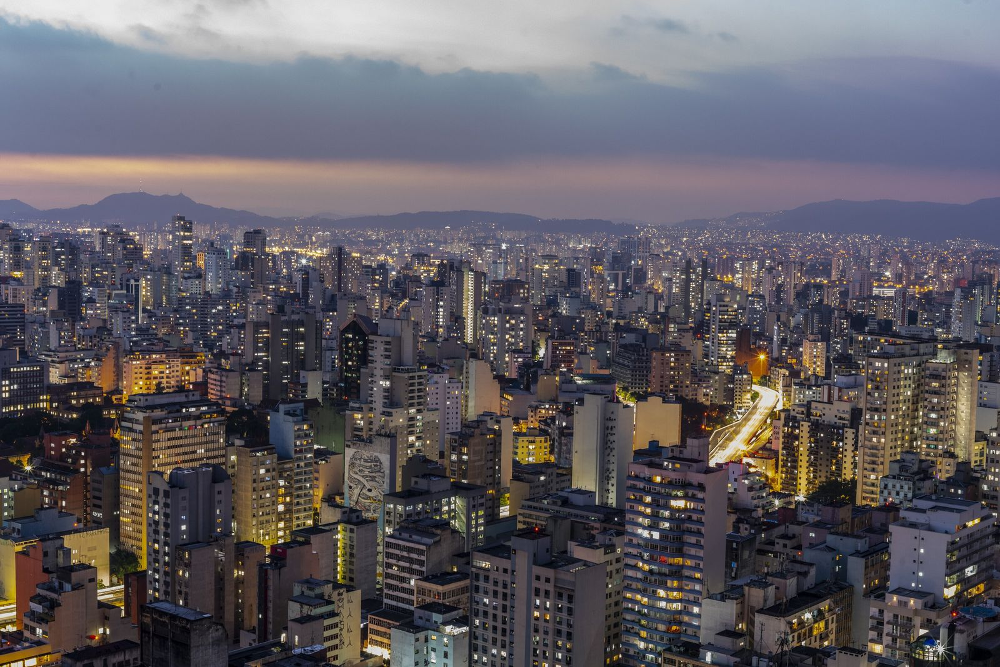

São Paulo
O mundo em uma cidade. O mundo em uma avenida. O mundo em um restaurante de esquina. São Paulo é tão grandiosa que nela tudo cabe. Cabe o empresário apressado para a reunião na Paulista, o jovem que devora uma média com pão na chapa depois da balada na Augusta e o boêmio que espera o final do dia para um chopp com jazz na Vila Madalena. Cabe o artista a flanar por dezenas de exposições apenas para ter inspiração, os apressados que correm nos vagões do metrô e os impacientes, parados no carro, enquanto a vida segue na cidade. E neste universo, onde tudo cabe, é o viajante quem se sente convidado a viver um pouquinho de cada um dos mundos paulistanos.
Algumas cidades grandes já têm roteiros tão estabelecidos que se torna fácil percorrer tudo em um ônibus de dois andares. Não. Este não é o caso de São Paulo. Esta metrópole é efervescente, viva e dada a muitas metamorfoses. Sempre haverá uma novidade a ser descoberta. Por mais que se tente cumprir todas as metas em uma visita, na próxima viagem a São Paulo, as exposições já terão mudado, novos restaurantes terão sido abertos e a balada da moda será outra. Muito provavelmente você terá a sensação de encontrar uma cidade absolutamente nova. São Paulo é inesgotável. É desses destinos para ir pelo resto da vida, sempre em busca de novos mundos a serem descobertos.

Os números que acompanham São Paulo refletem bem a imensidão da cidade. Como imaginar um lugar onde quase 12 milhões de habitantes conseguem eleger um prato predileto entre mais de 15 mil restaurantes e 4500 pizzarias? O que dizer de escolher entre 20 mil bares para tomar uma cerveja? Difícil também acreditar que alguém seja capaz de ir a todas as exposições, peças de teatro, shows e espetáculos, especialmente ao pensar que são mais 600 espaços destinados à cultura. Sem falar nas 240 mil lojas que fazem com que 14 milhões de visitantes deixem alguns reais todos os anos na cidade.
Fundado em 1554 pelos jesuítas para catequizar a população até então majoritariamente indígena, o pequeno povoado de Piratininga se transformou em uma das maiores metrópoles do mundo. Hoje, a cidade é reflexo da fusão de imigrantes de todos os continentes, os quais contribuíram para construir o universo multicultural que forma São Paulo. Há quem viaje à capital paulista apenas para uma reunião rápida, outros pretendem conhecer um novo restaurante, assistir a um show, ir a um jogo de futebol, fazer compras ou, simplesmente, curtir a mais pulsante cidade brasileira. A lista de opções é extensa, para não dizer infinita. Isso porque São Paulo está viva. Aproveite cada segundo para explorar todos os mundos que SP oferece. E lembre-se de voltar sempre.